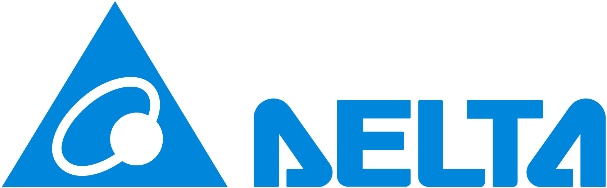
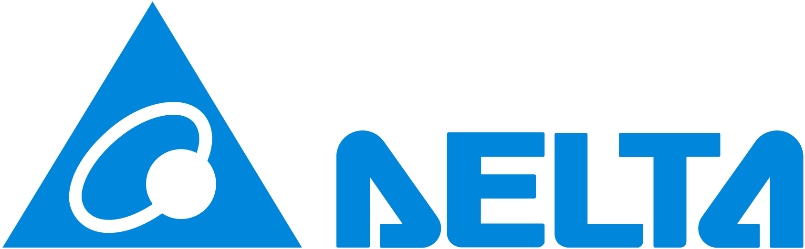

Programmation d’automates (PLC)
À la suite d’une analyse détaillée du cahier des charges et de la rédaction de l’analyse fonctionnelle, nos ingénieurs développent, configurent et optimisent des programmes d’automates industriels pour une large gamme de plateformes : Siemens (S7, TIA Portal), Allen-Bradley (Studio 5000), Schneider Electric (Unity Pro / EcoStruxure), Omron et bien d’autres.
Nous concevons des architectures logicielles fiables et évolutives, adaptées à vos besoins de production : gestion des séquences, régulation PID, sécurité machine, traçabilité, communication entre automates et intégration avec vos systèmes SCADA ou MES.
- Développement de programmes complets et modularisés
- Mise en réseau des automates et protocoles de communication (Profinet, Modbus, EtherNet/IP…)
- Tests, validation et documentation technique
- Formation et transfert de compétences
Système de Contrôle Distribué (DCS)
Nos ingénieurs développent et intègrent des systèmes DCS (Distributed Control System) dédiés à l’automatisation et à la supervision de procédés industriels complexes.
Nous maîtrisons plusieurs plateformes majeures, notamment Emerson DeltaV et Siemens PCS7, permettant une gestion optimale des procédés continus et batch, ainsi qu’une parfaite intégration avec les automates PLC existants.
🔧Nos prestations incluent:
- Conception et programmation de boucles PID et séquences automatiques
- Configuration des contrôleurs et interfaces opérateur (HMI / SCADA)
- Intégration DCS–PLC via Modbus, Profibus, Profinet, OPC...
- Tests, validation, mise en service et formation du personnel
- Migration et modernisation d’anciens systèmes de contrôle
🚀 Grâce à notre savoir-faire, nous garantissons des systèmes performants, sécurisés et évolutifs, offrant une supervision complète et une exploitation simplifiée de vos installations industrielles.

Supervision et développement d'interfaces opérateur (HMI / SCADA)
Nous concevons et développons des interfaces homme-machine (IHM) et systèmes de supervision (SCADA) intuitifs, performants et ergonomiques pour une exploitation fluide de vos installations industrielles.
Grâce à notre expertise sur des plateformes telles que WinCC, Wonderware, Aveva System Platform, Ignition et Movicon, nous créons des environnements visuels modernes permettant le suivi en temps réel de vos équipements, la visualisation des alarmes, la traçabilité des données et la maintenance prédictive.
- Conception graphique claire et ergonomique
- Architecture client/serveur, redondance et sécurité
- Connexion avec bases de données et systèmes MES
- Alarmes, tendances, historiques et rapports automatisés
Intégration de servomoteurs et variateurs de vitesse (VFD)
Nos équipes conçoivent, configurent et mettent en service des systèmes de commande motorisée intégrant des servomoteurs et des variateurs de vitesse performants pour des applications nécessitant précision, dynamique et fiabilité.
Nous assurons l’intégration complète de ces équipements au sein de vos lignes de production, qu’il s’agisse de contrôle de mouvement multi-axes, de synchronisation de machines ou d’optimisation énergétique. Nos solutions s’appuient sur des marques de référence telles que Siemens, Schneider Electric, Allen-Bradley, Danfoss, Bosch Rexroth et Omron.
- Configuration et réglage des servomoteurs et VFD
- Optimisation des boucles de régulation (vitesse, couple, position)
- Synchronisation d’axes et contrôle de mouvement avancé
- Intégration avec automates et systèmes SCADA
Intégration de réseaux de communication industriels
Nous concevons et mettons en œuvre des infrastructures de communication industrielles robustes, sécurisées et performantes, assurant une connectivité fiable entre vos équipements, automates et systèmes de supervision.
Nos experts maîtrisent l’intégration et la configuration des principaux protocoles industriels tels que Profinet, Modbus TCP/IP, EtherNet/IP, Profibus et CANopen, ainsi que les architectures de communication pour l’Industrie 4.0 et l’interconnexion avec les systèmes MES / SCADA.
- Conception d’architectures réseaux (filaire, Wi-Fi, fibre, hybride)
- Configuration et diagnostic de switches, routeurs et passerelles industrielles
- Analyse de performance et sécurisation des communications
- Intégration et supervision réseau dans les environnements SCADA

Instrumentation & Métrologie industrielle
Nos spécialistes assurent la mise en œuvre, la calibration et la maintenance des instruments de mesure et de contrôle, garantissant la précision et la fiabilité de vos procédés industriels.
Du capteur à la chaîne de mesure complète, nous intervenons sur une large gamme d’équipements : capteurs de pression, température, débit, niveau, analyseurs et transmetteurs. Nos solutions répondent aux exigences des secteurs les plus rigoureux : agroalimentaire, pharmaceutique, énergie, pétrochimie, et manufacturing.
- Étude et sélection des instruments adaptés à vos procédés
- Installation, câblage et configuration des capteurs et transmetteurs
- Étalonnage, calibration et vérification métrologique
- Rédaction de rapports et certificats de conformité
- Maintenance préventive et corrective des instruments
Migration & Revamping d’automates et interfaces opérateurs
La migration et le revamping des systèmes automatisés sont des étapes clés pour assurer la pérennité, la performance et la compatibilité de vos installations industrielles avec les technologies actuelles. Nos équipes vous accompagnent dans la modernisation de vos automates, interfaces opérateurs et systèmes de contrôle-commande, tout en garantissant la continuité de production et la sécurité des procédés.
Après une analyse détaillée de votre installation existante, nous mettons en œuvre une méthodologie rigoureuse comprenant :
- • Recensement du parc d’automates et d’interfaces opérateurs, afin d’identifier les équipements obsolètes et les risques associés ;
- • Préparation d’un plan de migration adapté à vos contraintes techniques et de production ;
- • Remplacement des automates et interfaces opérateurs, avec intégration des nouveaux matériels selon les standards du marché ;
- • Conversion des programmes vers les nouvelles plateformes pour préserver la logique de fonctionnement et les performances de vos procédés ;
- • Création de copies de sauvegarde de vos programmes et configurations ;
- • Remplacement des piles et composants critiques pour fiabiliser vos systèmes dans la durée.
Nous intervenons sur la plupart des grandes marques d’automates et d’interfaces opérateurs, notamment :
Automates à remplacer :
- Allen Bradley : PLC2, PLC3, PLC5, SLC100, SLC500…
- GE Fanuc : 90-20, 90-30, Genius I/O, VersaMax…
- Mitsubishi : FX, Q, A…
- Modicon : 984, Compact…
- Omron : C20K, C200, C200H, C200HS…
- Panasonic : FP Series…
- Siemens : S5…
- Télémécanique : TSX17, TSX27, TSX47…
- Texas Instruments : TI505, TI405, TI305…
- … et bien d’autres modèles.
Interfaces opérateur à remplacer :
- Allen Bradley : PanelView, ControlView…
- Horner Electric (GE Fanuc) : HE…
- Pro-Face : GP, ST, GLC…
- Omron : NT, NTS…
- Siemens : OP5, OP7…
- … et plusieurs autres.
Grâce à notre expertise multi-marques et à notre maîtrise des outils de conversion logicielle, nous garantissons une transition fluide, sécurisée et documentée vers vos nouvelles plateformes d’automatisation. Notre objectif : vous fournir un système fiable, performant et évolutif, prêt à répondre aux exigences de l’industrie 4.0.
Télémétrie & Monitoring Industriel
🌐 Télémétrie – Accès distant sécurisé
GSA Automation intègre des systèmes de télémétrie industrielle permettant la supervision à distance des équipements via des connexions fiables et sécurisées.
Grâce à la plateforme Talk2M et le logiciel eCatcher, nous assurons un accès VPN sécurisé à vos automates et systèmes, facilitant la maintenance, le diagnostic et la gestion multi-sites.
🔧 Nos services incluent :
- Étude et conception d’architectures de télémétrie
- Intégration de modules de communication (radio, 4G/5G, satellite...)
- Connexions VPN via Talk2M / eCatcher
- Sécurisation des communications industrielles
🚀 Une connectivité robuste et sécurisée, pour une gestion distante efficace de vos installations.

📊 Monitoring – Supervision & Analyse
Nous mettons en place des solutions de monitoring en temps réel pour analyser les performances de vos équipements et garantir la continuité de production.
Nos experts intègrent des plateformes telles que IVTracer, Ignition et Aveva Insight, permettant la visualisation des données, la traçabilité et l’analyse prédictive.
📈 Fonctions principales :
- Suivi en temps réel des process industriels
- Tableaux de bord personnalisés et rapports dynamiques
- Historisation et analyse des données
- Intégration avec SCADA / MES / Cloud


 

.svg)